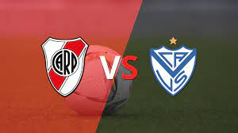

Ultimas Novedades
River cerró la venta de unas de sus joyas: Enzo Fernández.
Uno de los jugadores de mejor rendimiento en lo que va del año, continuará su carrera en el Benfica, aunque recién se marchará en diciembre cuando el equipo de Marcelo Gallardo termine su participación en la Copa Libertadores y en la Liga profesional.
A través de un comunicado difundido en su página web, el Benfica confirmó que adquirió el 75 por ciento del pase de Fernández en 10 millones de euros, más un monto variable que puede llegar a ocho millones más. “Sport Lisboa e Benfica - Futebol, SAD (”Benfica SAD”) informa que llegó a un acuerdo con River Plate para la adquisición de los derechos deportivos y el 75% de los derechos económicos del jugador Enzo Fernández, por importe de 10.000,000€ (diez millones de euros), a los que se podrá añadir una cantidad variable de 8.000.000€ (ocho millones de euros)”, dice el texto publicado por el club portugués.
El futbolista continuará en River hasta diciembre de este año, con el objetivo de mantener la base del equipo que peleará por la Copa Libertadores y la LPF. De esta manera se cumplió uno de los deseos de Marcelo Gallardo, que ya verá resentido su esquema con la salida del delantero Julián Álvarez al Manchester City en los primeros días de julio
Hace aproximadamente un mes, emisarios de Benfica estuvieron en Buenos Aires acordando el contrato del jugador e iniciaron las gestiones con River para la compra que se terminó de cerrar en la mañana del jueves con la oferta final.
Se despide Julian de River
¿Caido lo de Borja?
Malas noticias: Suarez lesionado
Proximos Partidos
River vs Lanus

River vs Velez
River vs Banfield

Luis Suarez rompio el silencio
El delantero uruguayo se mostró agradecido para con el deseo del Muñeco de contar con él. "Mi predisposición estaba en ir a aportar lo que puedo aportar", reconoció. La eliminación de River en la Copa Libertadores tiene esta vez un dolor especial. Más allá de la frustración de cualquier derrota -y más con polémica- quedarse sin cuartos de final a River le significó el final del sueño de tener, aunque fuera por unos meses, a un delantero de jerarquía mundial como Luis Suárez.
El delantero uruguayo reconoció que al quedarse River sin Copa Libertadores, su posible llegada al Millonario también quedó truncada y al confirmarlo le dejó un mensaje a Marcelo Gallardo. "Estoy agradecido con él porque un entrenador con la trayectoria que está teniendo él, de la forma en que viene creciendo en River, que preste atención a que uno quiere ir a jugar es un halago, es un orgullo", indicó en F12, por ESPN.
Y agregó: "Mi predisposición estaba en ir a aportar lo que puedo aportar. Ser uno más, el que me conoce en la interna sabe que quería ir a ganar, a ser competitivo". "Si avanzaban a cuartos estaba muy entusiasmado, pero tuvimos la mala suerte de que ayer River quedara afuera. Por lo deportivo se cae, me motivaba la Libertadores. Con Enzo (Francescoli) quedamos en seguir hablando, pero soy un agradecido por la oportunidad que me dieron", afirmó en ESPN.
Por lo pronto, mientras se pone a punto tras la limpieza de su rodilla derecha, desde Uruguay aseguran que Luis analiza tres ofertas importantes de Europa (serían de España, Italia y Países Bajos) y descartó, por ejemplo, jugar en el fútbol brasileño. Lo concreto es que después de varios días de ilusión y expectativa, la Copa se rompió y Suárez no se pondrá la banda roja.